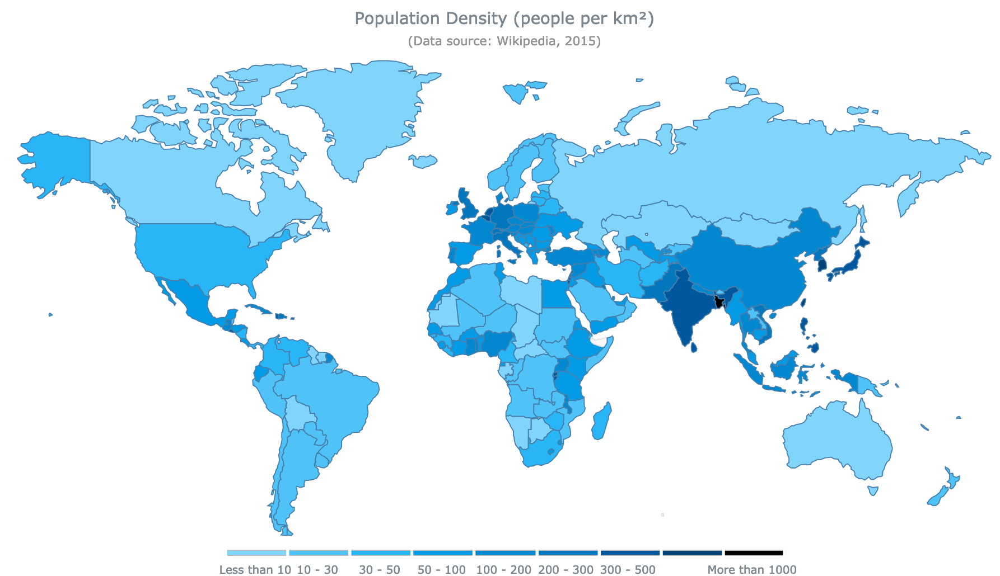

Visualización de datos espaciales
IIC2026
Codificación de datos geométricos
Visualización de datos espaciales
IIC2026
Visualización de datos espaciales
La decisión de diseño principal a utilizar en este caso es: utilizar geometría entregada.
Utilizar geometría entregada
Si realmente es uno de los focos y puntos de interés identificados en la abstracción de tareas y datos.

Datasets de campo y datos singulares de grilla


(Fuente: The Visualization Handbook (Hansen y Johnson))
(Fuente: Scientific Visualization Research)
Datasets geométricos y geográficos

(Fuente - DataViz Catalogue: Bubble map)
Datasets geométricos y geográficos

(Fuente - DataViz Catalogue: Connection map)
Datasets geométricos y geográficos

(Fuente - DataViz Catalogue: Flow map)
Mapa coroplético
(Fuente - AnyMap JS Maps : World Choropleth Map )
| Idiom | Mapa coroplético. |
| Qué: Datos | Geométrico: datos geográficos (formas) de regiones. Tabular: atributo de valor cuantitativo por región. |
| Cómo: Codificar | Espacio: utilizar geometría entregada por forma de regiones. Color codifica atributo mediante colormap ordenado. |